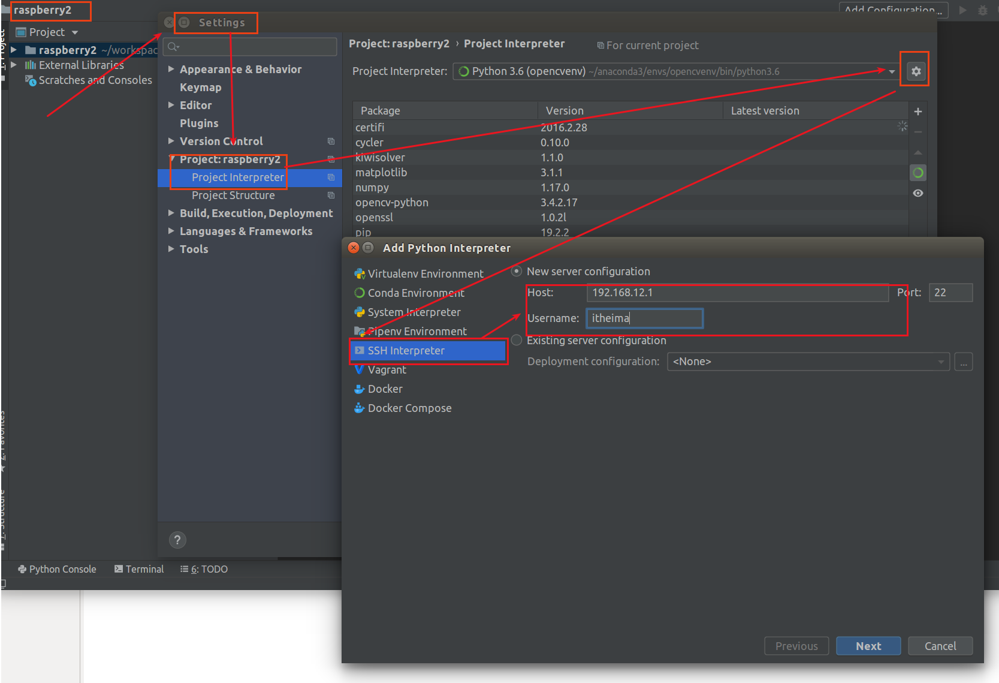

开发环境¶
远程连接¶
- 在前面我们已经在tf卡根目录中创建了ssh文件，现在我们就可以尝试连接
1 | |
- 如果上面这一步有问题，可以直接在树莓派中检查ssh服务是否正确开启
1 2 3 4 5 6 | |
Pycharm远程连接¶
工欲善其事必先利其器，刚才我们已经验证了可以使用ssh建立连接，接下来我们就使用pycharm来远程连接服务器
- 新创建一个工程，任意选择一个已有的环境
- 新建一个远程环境，填入树莓派相关信息（ip地址，用户名）

- 输入itheima这个用户的密码
- 选择python3,并且指定本地文件同步到树莓派中哪个路径
现在，我们只需要在本地开发代码，保存之后，代码就可以同步到树莓派中，并且点击运行程序，程序将会在树莓派中运行，而不是在本机中运行！